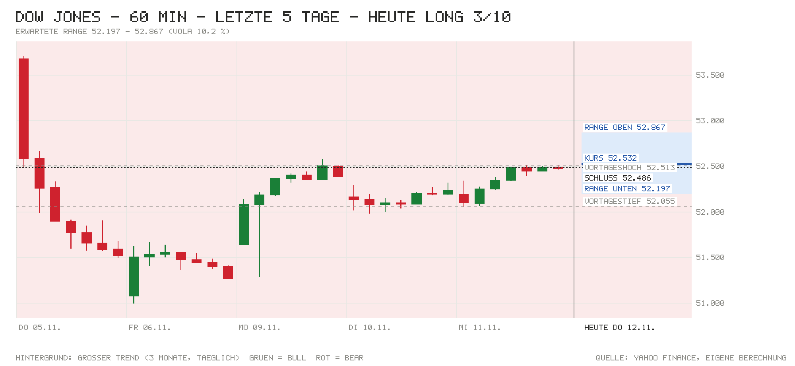

Tagesentscheidung ab 15:32 bis 22:00 Uhr
Nvidia fällt um gut 10 %, nachdem Chef Jensen Huang zurückgetreten ist. Der Dow steckt das weg: Die kleine Eröffnungslücke (−0,11 %) ist geschlossen, der Index steht über dem Vortagesschluss. Grund ist eine Umschichtung in defensive Schwergewichte (Travelers, J&J, McDonald's, Amgen, Home Depot), alle 30 Werte zusammen +40 Pkt. trotz −109 Pkt. von Nvidia. Gegenargumente: Die 10-jährige Rendite steht über 5 %, die Fed-Erhöhung im Dezember ist voll eingepreist, der Dollar ist stark, der große Trend steht auf Bear. Dazu kommen um 19:00 Uhr die Auktion 30-jähriger Anleihen und mehrere Fed-Reden. Greift der Tech-Ausverkauf auf den breiten Markt über, kippt das Bild.
- Kurs um 15:32
- 52.532
- Erwartete Range
- 52.197 – 52.867
- Eingepreist (Tagesoption)
- ±0,64 %
Einschätzung vom Kurs um 15:32 bis zum US-Schluss. Range = ±1 σ für die restliche Handelszeit aus der S&P-500-Tagesoption, auf den Dow umgerechnet (ca. 68 %). Keine Anlageberatung.
Chart

Signale
| Signal | Wirkung | Stand und Einordnung |
|---|---|---|
| Eröffnung & erste Minuten | Rückenwind | Eröffnung 52.428 (Lücke −0,11 %), jetzt 52.532 (+0,2 % seit Eröffnung), Hoch/Tief bisher 52.617/52.428. Die Lücke ist schon geschlossen, obwohl S&P 500 und Nasdaq 100 deutlich nachgeben. |
| Schwergewichte heute | Rückenwind | Alle 30 Werte zusammen +40 Pkt. Nvidia −109 und Caterpillar −34 gegen Travelers +30, Amgen, J&J und McDonald's je +22, Sherwin-Williams +21, Home Depot +20. |
| US-Daten heute | Neutral | Erstanträge auf Arbeitslosenhilfe 200.000 vs. Prognose 194.000 (zuvor 189.000), fortgesetzte Anträge knapp unter 1,7 Mio. Etwas schwächer, aber kein Wendepunkt. |
| Europa & Asien | Neutral | DAX +0,43 %, Euro Stoxx 50 ±0,00 %. Über Nacht Nikkei −0,70 %, Shanghai −0,67 %, Hang Seng −1,26 %. |
| Zinserwartung | Gegenwind | Fed am 9.12.: 104 % für +25 Bp. (impl. 4,14 %), voll eingepreist. Januar weitere 66 %, März 71 %. |
| Renditen | Gegenwind | US 2J 4,80 %, 10J 5,03 % (+4 Bp. zum Vortag). Die 10J bleibt über der 5-%-Marke. |
| Kreditstress | Neutral | FRED n/v. Ersatz: HYG −0,17 %, LQD −0,23 %. Leichte Abgaben, kein Stress. |
| Öl & Dollar | Gegenwind | WTI 86,55 USD (+0,02 %), Brent 93,40 USD (+0,69 %). EUR/USD 1,1095 (−0,66 %): Der Dollar legt weiter zu. |
| Trend | Gegenwind | 52.532 über dem 21-Tage-Schnitt (52.218), dem 50-Tage-Schnitt (52.016) und dem 200-Tage-Schnitt (50.724). Der große Trend steht aber seit 28.10. auf Bear und passt nicht zu Long. |
| Positionierung | Neutral | COT 3.11.: Hedgefonds im S&P-Future netto −372.318 (+28.286), Vermögensverwalter +928.584. Kein Extrem. |
| Unternehmensnachrichten | Gegenwind | Nvidia-Chef Huang tritt nach einem Skandal zurück, Finanzchefin Colette Kress führt übergangsweise. Bernstein halbiert das Kursziel auf 200 USD. Im Dow nur −109 Pkt., aber Ansteckungsgefahr für den ganzen Markt. |
| Profi-Sicht | Neutral | ING: Der Dollar hat weiter Luft nach oben, falls die Wetten auf eine Erhöhung im Dezember zunehmen. Dass der Markt Nvidia-Verluste und höhere Renditen verdaut, spricht laut ING für anhaltendes Vertrauen in KI-Werte. |
| Termine im Fenster | Neutral | Fed-Reden (Barr 16:00, Goolsbee 17:30, Daly 19:10, Schmid 19:30), Auktion 30-jähriger Anleihen über 25 Mrd. USD um 19:00, Cisco nach Schluss. Kein Fed-Entscheid. |
Dow-Werte heute
| Aktie | Heute | Beitrag |
|---|---|---|
| Nvidia | −10,26 % | −109 Pkt. |
| Caterpillar | −0,92 % | −34 Pkt. |
| Travelers | +1,21 % | +30 Pkt. |
| Amgen | +0,76 % | +22 Pkt. |
| Johnson & Johnson | +1,26 % | +22 Pkt. |
| McDonald's | +1,30 % | +22 Pkt. |
| Sherwin-Williams | +0,99 % | +21 Pkt. |
| Home Depot | +0,92 % | +20 Pkt. |
| Summe aller 30 Werte | +40 Pkt. |
Beitrag = Kursänderung seit gestern ÷ Dow-Divisor (aus den Kursen berechnet, 0,1635). Laufende Kurse von Yahoo, bis zu 15 Minuten verzögert. Die Dow-Liste im Skript hat den Stand Nov. 2024.
Großer Trend (3-Monats-Momentum)
- Stand
- Bear
- Seit
- 28.10. (5 Wechsel in 3 Monaten)
- Schluss 11.11.
- −2,51 % vs. Zins +0,98 %
- Heute dreht es bei Schluss über
- 54.262 (jetzt −3,2 %)
Auch mit dem Kurs von jetzt bliebe das Signal Bear. Bull = Rendite der letzten 3 Monate über dem Geldmarktzins, Bear = darunter. Regel: Rendite der letzten 63 Handelstage (≈ 3 Monate) gegen die 13-Wochen-T-Bill (^IRX, jetzt 4,11 %), jeden Tag zum Schluss neu entschieden, Zeitrahmen Tageskerzen (nach Antonacci 2014, dort monatlich über 12 Monate; täglich entschieden dreht es öfter falsch). Keine Anlageberatung.
Bilanz der letzten Entscheidung
11.11.: Long mit 3/10 ab 52.326. Die Richtung war richtig: Schluss 52.486, +160 Punkte in Richtung der Einschätzung (Hoch 52.513, Tief 52.055). Die Range von ±268 wurde getroffen. Gesamt seit Start: 5 Einschätzungen, Richtung 60 % richtig, Summe −898 Punkte bis Schluss. Range bisher an 40 % der 5 Tage getroffen (Soll ca. 68 %).
Marktlage
| Markt | Stand | Veränderung |
|---|---|---|
| Dow Jones (Schluss 11.11.) | 52.486,49 | +0,49 % |
| Dow (Eröffnung heute) | 52.427,94 | −0,11 % |
| Dow (jetzt, Kurs zur Notiz 15:32) | 52.532 | +0,09 % |
| S&P 500 | 7.562,66 | −0,74 % |
| Nasdaq 100 | 27.992,59 | −1,35 % |
| US-Futures (S&P / Nasdaq) | 7.584,75 / 28.071,00 | −0,73 % / −1,41 % |
| DAX (aktuell) | 26.776,73 | +0,43 % |
| Euro Stoxx 50 (aktuell) | 6.393,41 | ±0,00 % |
| EUR/USD | 1,1095 | −0,66 % |
| WTI (USD/Barrel) | 86,55 | +0,02 % |
| Brent (USD/Barrel) | 93,40 | +0,69 % |
| Gold (USD/Unze) | 3.910,30 | −2,25 % |
| VIX | 18,85 | +7,78 % |
| VXD (Schluss 11.11.) | 15,67 | −8,31 % |
Stände von 15:33 Uhr (Yahoo, bis 15 Min. verzögert). Steigendes Öl, ein fallender Euro (starker Dollar) und ein steigender VIX sind rot markiert, ein fallender VXD grün. Der Schluss vom 11.11. ist gegen den 10.11. (52.231,89) gerechnet.
Anleihen & Zinsen
| Kennzahl | Stand | Veränderung |
|---|---|---|
| US-Treasury 2J (live) | 4,80 % | +5 Bp. (vs. 4,75 % am 10.11.; 11.11. kein Handel) |
| US-Treasury 10J (live) | 5,03 % | +4 Bp. (vs. 4,99 %) |
| Fed nächste Sitzung (9.12.) | 104 % für +25 Bp. (impl. 4,14 %) | Erhöhung voll eingepreist |
| Fed-Zielband | 3,75–4,00 % (EFFR 3,88 %) | zuletzt +25 Bp. am 17.9. |
| US-Hochzins (HYG, Ersatz) | 77,22 USD | −0,17 % heute |
| Investment Grade (LQD, Ersatz) | 103,72 USD | −0,23 % heute |
Die Risikoaufschläge von FRED lagen nicht vor, daher die Anleihe-ETFs HYG und LQD als Ersatz (nur Tagesveränderung, Wochenwert n/v). US-Live-Kurve von CNBC, Stand 15:32 Uhr. Offizielle 10J vor einer Woche: 4,95 %.
Termine heute (deutsche Zeit)
- 14:30 USA: Erstanträge auf Arbeitslosenhilfe – Ist 200.000 vs. Prognose 194.000 (zuvor 189.000); fortgesetzte Anträge knapp unter 1,7 Mio. (Prognose 1,71 Mio.)
- 15:30 Eröffnung der Wall Street
- 16:00 USA: Verkäufe bestehender Häuser – Prognose 3,89 Mio. · zuvor 3,99 Mio.; Rede Fed-Vize Barr (Aufsicht)
- 17:30 Rede Fed Goolsbee (Chicago)
- 18:00 USA: EIA-Rohöllager – Prognose −0,6 Mio. Barrel
- 19:00 Auktion 30-jähriger US-Anleihen (25 Mrd. USD)
- 19:10 Rede Fed Daly (San Francisco); 19:30 Rede Fed Schmid (Kansas City)
- 20:00 USA: Haushaltssaldo Oktober – Prognose −298,6 Mrd. USD
- 22:00 US-Börsenschluss; danach Quartalszahlen Cisco (EPS-Prognose 1,15 USD). 22:30 Rede EZB-Präsidentin Lagarde.
Nachrichten zu Dow-Werten
- Nvidia: Konzernchef Jensen Huang ist zurückgetreten, nachdem der Verwaltungsrat laut Berichten von NYT, WSJ und FT wegen Vorwürfen außerehelicher Beziehungen über seine Zukunft beraten wollte. Finanzchefin Colette Kress führt übergangsweise. Aktie −10,3 % (−109 Pkt.), Bernstein halbiert das Kursziel von 400 auf 200 USD. Einschätzung: negativ für Tech; für den Dow wegen des niedrigen Aktienkurses begrenzt.
- Travelers, Johnson & Johnson, McDonald's, Amgen, Home Depot, Sherwin-Williams: zusammen +137 Pkt. Eine eigene Meldung fand sich nicht. Einschätzung (ohne Quelle): Umschichtung aus Tech in defensive Werte, darum hält sich der Dow besser als S&P 500 und Nasdaq.
- Caterpillar: −0,9 % (−34 Pkt.), keine eigene Meldung gefunden. Einschätzung (ohne Quelle): Mit dem höchsten Kurs im Index der wichtigste Taktgeber; Belastung durch den starken Dollar.
- Cisco: legt heute nach Börsenschluss Quartalszahlen vor (EPS-Prognose 1,15 USD), Aktie vorab −1,2 %. Einschätzung: Wirkt erst morgen auf den Dow.
Profi-Sicht & Positionierung
- ING THINK: Laut „FX Daily: EUR/USD gears up for a 1.10 test“ ist die Dollar-Rally zinsgetrieben; steigen die Wetten auf eine Erhöhung im Dezember weiter, hat der Dollar mehr Luft nach oben. Dass der Markt Nvidia-Verluste und höhere Renditen verdaut, wertet ING als anhaltendes Vertrauen in KI-Werte. „Rates Spark“ sieht das Risiko, dass Notenbanken höhere Inflation hinnehmen, um hohe Staatsschulden tragbar zu halten.
- Positionierung (COT, Stand 3.11.): Hedgefonds im S&P-Future netto −372.318 Kontrakte (+28.286), Vermögensverwalter netto +928.584. In der 10-jährigen Treasury Hedgefonds netto −2,26 Mio. Kontrakte (−35.035).
Quellen
- Marktdaten (Skript
marktdaten.mjs): Yahoo Finance (Kurse, Dow-Werte, VXD, ^IRX), Nasdaq (Kalender, Optionskette SPY), CNBC (US-Kurve), Bundesbank, U.S. Treasury, Fed-Pfad über Amber Terminal, CFTC (COT), ING THINK - CNBC: Nvidia stock falls 12% as CEO Jensen Huang announces resignation
- CNN: Nvidia CEO Jensen Huang resigns after mounting scandal
- Yahoo Finance: Stock market today, 12.11.2026
- CNBC: Stock market live updates (Erstanträge)
- U.S. Treasury: Quarterly Refunding (30J-Auktion 12.11.)
- ING THINK: FX Daily – EUR/USD gears up for a 1.10 test
- ING THINK: Rates Spark – Inflation pricing sends mixed signals